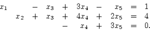
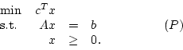
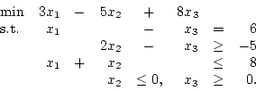
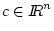
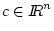
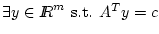
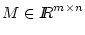
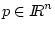

Let

Here,
- (a)
- Construct a linear programming problem of the form (P) with dim(K)>n-m.
- (b)
- Construct a feasible
linear programming problem of the form (P)
with dim(K)<n-m,
 ,
and rank(A)=m.
,
and rank(A)=m.
- (c)
- In part (b), the linear program you defined has a degenerate basic feasible solution. What are the bases associated with that bfs?

Use complementary slackness to show that x=(6,0,0) is optimal for this problem.
Consider the subspace alternative theorem:
For
 and
,
exactly one of the
following holds:
and
,
exactly one of the
following holds:
- (a)
- 
- (b)
-

First observe that both (a) and (b) can not hold simultaneously. Thus, it suffices to show that when (a) fails, (b) must hold. Next assume (a) fails and then construct an x which satisfies (b).(Hint: You may assume that, given a matrix  and a vector , there exist unique p' and p'' such that p=p'+p'', Mp'=0, p''=MTq for some q, and p'Tp''=0.)